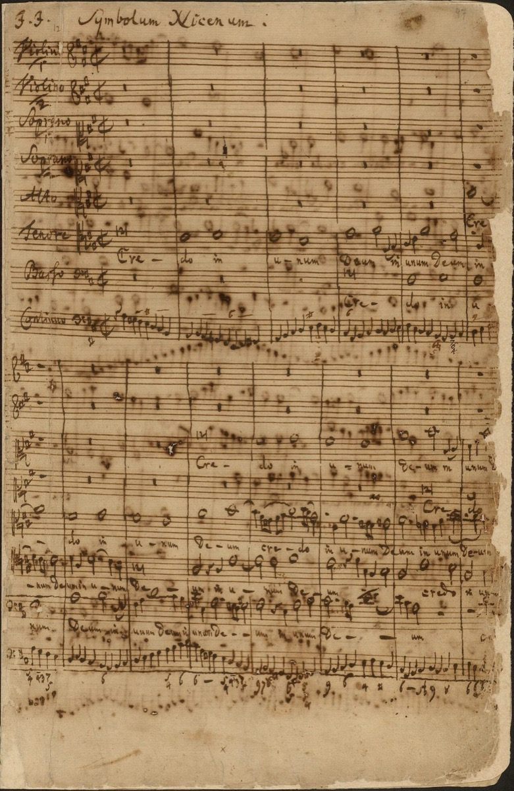

The B minor Mass assembled: a life's sacred music in one summa

The autograph of the Mass in B minor keeps a physical record of what it cost. In the later pages the handwriting deteriorates — the script of a man in failing health, pressing the largest single work of his life to completion through 1748 and 1749. And he was pressing it toward no deadline anyone had set. The foundation was the Missa he had sent to Dresden in 1733 — a Kyrie and Gloria, originally part of his long campaign for a court title. To it he now added a Credo, the Symbolum Nicenum; a Sanctus written back in 1724; and the closing complex — a complete Latin Mass on the grandest scale, from a Lutheran cantor with no occasion for one, no commission, and no realistic prospect of ever performing it entire.
How he built it is what it means. The Mass is substantially parody at summa scale — the eighteenth-century workshop practice of setting new words to existing music, applied here not for economy but for judgment: his life's finest sacred movements selected, re-texted, and perfected. The Crucifixus, the Mass's darkest center, is the lament chorus of the Weimar cantata BWV 12, written in 1714 and here reconsidered after thirty-five years. Other movements distill the best of two decades of Leipzig cantatas. The Credo opens in Renaissance stile antico over a walking bass — the old church style he had first absorbed in the Lüneburg library as a schoolboy — while the Et incarnatus stands with the last and most modern music he ever wrote. Old style and new, 1714 and 1749, chant and gallantry, side by side and answering each other: the Mass is a curated retrospective of sacred music itself, his own above all, assembled by the one judge who had heard all of it.
Why Latin, and why a full Mass, from a Lutheran? The candidate explanations are all reasonable and none sufficient. Dresden practicality — a Latin Mass suited the Catholic court where his title lived. Universal permanence — the Latin ordinary was the one sacred text that belonged to no confession's fashion and would never be revised out from under the music. Or pure summa-instinct, the same drive then producing the Art of Fugue down the hall. The scholarship debates the weighting, and the work's own card maps the debate; the honest summary is that the object outruns every explanation offered for it.
He never heard it whole. No complete performance is documented before the nineteenth century; his son Emanuel mounted the Credo in 1786, a generation after the composer's death, and that is as close as the family came. The autograph passed down through the heirs, survived the scattering that claimed so much else, and rests today in Berlin — beside, as it happens, the Brandenburg dedication score. The two poles of his art, the instrumental portfolio and the sacred summa, shelved together in one library: neither performed for its intended audience, both addressed, in the end, to us.
If Arc I of this timeline has a final chord, it is here. In 1708, resigning from Mühlhausen, the young organist had put his life's goal on paper: a well-regulated church music to the glory of God — the famous Endzweck, the final purpose. Every subsequent employer received some portion of that ambition, and every one of them constrained it: budgets, councils, liturgies, the week's deadline. The B minor Mass is the Endzweck delivered at last, forty years on, to no employer at all — beyond any liturgy that could contain it, in a language his own congregation would never hear it in, addressed, as far as the evidence shows, to posterity and to God. The working documents of a working life, gathered up in a failing hand and made permanent. Whatever the decade's other riddles, this one reads plainly: he knew what he had made, and he knew who it was for.
Continue with the era essay: Leipzig III: the summing-up, or go deeper into the work itself: the B minor Mass.
Autograph score of BWV 232 (Bach Digital)
Wolff, The Learned Musician, ch. 12
→ full bibliography & links